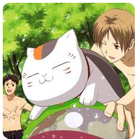

| |
|
|  |
 |
|
|
| Yuki Kawakawa (Midorikawa Yaki), Japanese female cartoonist, May 23, 1976, born in Kumamoto, Japan, hakusen Sha shrine, the work of the company, and the book of the work, "La La DX" is the top table of the work, the story of the river is short, and it is a lot. |
| Yuki Kawakawa (Midorikawa Yaki), Japanese female cartoonist, May 23, 1976, born in Kumamoto, Japan, hakusen Sha shrine, the work of the company, and the book of the work, "La La DX" is the top table of the work, the story of the river is short, and it is a lot. List of works
* the 'flower thief' short story (1998)
The short story of coffee (1998)
* "demon boy boy" (original name, "the voice to bloom", 1999 - 2001, Lara Lara DX, shirsen Sha) - all three volumes
* unnamed guests
* ` summer sighs' (2000, Laura September issue)
A short story of "the flower pursuer" (2001, the middle of the year), La Lala
A short story of the flower Sutra 2001
* the name of 'kagotsuki no hi' (original name, Azuchi Hibi, 2001, Lara DX)
A short history of the cold sun
* ("ame no Mori no Mori" (original name, "Flamingo"), 2002, Lara DX): a short list of the short names (1)
The short story of "Kano"
* colored chair (original chair), 2002-2004, Lara DX - all three volumes
Tomome Natsume
Kome Natsume
(2003) "chick, deep"
A short history of body temperature
* "Natsume no Otome" (also known as "Yokai Dango"), original name "Natsume no Otome", 2003 2005
A short essay
|
|
|